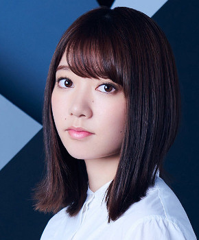

サカミチ
サカミチアンビバレントあんびばれんと

初収録リリース「アンビバレント」のジャケット
欅坂46
発売日：2018-08-15
収録：アンビバレント（7thSG）
種別：表題曲
センター：平手友梨奈
作曲：TETTA、浦島健太
編曲：TETTA、浦島健太
ライブ披露：54件
フォーメーション
上が後列、下が前列です。色付きがセンター。（参考データに基づく）
織田奈那
 齋藤冬優花
齋藤冬優花 守屋茜
守屋茜 渡辺梨加
渡辺梨加 尾関梨香
尾関梨香
米谷奈々未石森虹花
 佐藤詩織
佐藤詩織 上村莉菜
上村莉菜 菅井友香
菅井友香 長濱ねる
長濱ねる 小池美波
小池美波長沢菜々香
 土生瑞穂
土生瑞穂鈴本美愉
 平手友梨奈
平手友梨奈 渡邉理佐
渡邉理佐 小林由依
小林由依参加メンバー（18名）
石森虹花、上村莉菜、尾関梨香、織田奈那、小池美波、小林由依、齋藤冬優花、佐藤詩織、菅井友香、鈴本美愉、長沢菜々香、長濱ねる、土生瑞穂、平手友梨奈、守屋茜、米谷奈々未、渡辺梨加、渡邉理佐
この曲が披露されたライブ（54件）
新しい順に20件まで表示しています（全54件）。
同じリリースの曲
アンビバレント、Student Dance、I'm out、302号室、音楽室に片想い、日が昇るまで